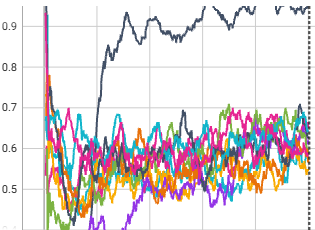

PRACTICE Lab, UCLA
World-Model Reinforcement Learning for Quadruped Robot Soccer
Debajyoti Chakrabarti · Anushri Dixit · Jacob Pham · PRACTICE Lab, UCLA
Overview
This project combines hierarchical world-model reinforcement learning, iterative self-play, and risk-sensitive policy learning for quadruped robot soccer. In the current experiments, a high-level R2-Dreamer policy directs a frozen dribbling controller and is trained against progressively stronger opponents before being extended to account for lower-tail outcomes. Compared with Dreamer, R2-Dreamer replaces image reconstruction with redundancy-reduced representation learning while retaining latent imagination.
System Architecture
The current soccer experiments use a hierarchical architecture in which R2-Dreamer performs high-level decision making while a frozen dribbling policy executes low-level locomotion and ball-control commands. A separately trained kicking skill exists in the broader project but is not currently part of the active high-level control loop.
Iterative Self-Play
All current training and evaluation are performed in Isaac Sim. Competitive play is non-stationary: as the opponent changes, the ego policy must adapt to a new behavioral baseline.
Training begins against a scripted random-patrol opponent. Each trained ego policy is then frozen and used as the opponent for the next iteration, creating progressively stronger competition.

Later iterations face progressively stronger opponents, so their success rates are not directly comparable to performance against one fixed benchmark. The similar band reached by later policies is a preliminary empirical observation, not evidence of convergence.
Risk-Sensitive World-Model RL
Main Research DirectionThe risk-sensitive extension augments R2-Dreamer with a lower-tail objective that places additional emphasis on poor imagined outcomes. In the soccer task, these low-return trajectories can correspond to falls, collisions, timeouts, failure to make progress, or otherwise unsuccessful play.
Preliminary Results
Simulation OnlyPreliminary simulation results — ongoing experiments.
The rollout videos are illustrative examples; the aggregate evaluation below provides the quantitative comparison.
Aggregate evaluation at 200k training steps, averaged across three seeds (N = 1,000 episodes):
Swipe horizontally to view all metrics.
| Policy | Mean return | Goal rate | Real CVaR0.25 | Fall rate | Timeout rate |
|---|---|---|---|---|---|
| Risk-neutral | 229.6 | 82.4% | 46.8 | 4.8% | 12.1% |
| CVaR | 251.3 | 92.4% | 92.0 | 5.4% | 1.7% |
In this evaluation snapshot, the CVaR policy has higher mean return, goal rate, and lower-tail return, with substantially fewer timeouts and a similar fall rate. These preliminary results do not yet establish robustness across training checkpoints or hardware deployment.
Understanding Tail-Risk Prediction
A central research question is whether low-return trajectories imagined by the learned world model correspond to genuinely risky behavior when the policy is executed in closed loop. A useful risk signal must preserve that relationship rather than merely identify artifacts of model prediction.
Current Research Questions
- Tail-risk fidelity: When do low-return trajectories predicted in world-model imagination correspond to poor real closed-loop outcomes such as falls, collisions, or timeouts?
- Failure-aware world models: Can targeted training on rare failure regions improve the accuracy of imagined tail outcomes used for risk-sensitive policy learning?
- Risk-sensitive policy learning: Does improving world-model fidelity in failure regions translate into more robust real policy behavior under CVaR-based objectives?
Ongoing Work
Current experiments focus on improving world-model accuracy in rare failure regimes and evaluating whether these gains translate into more reliable CVaR-based policy learning. Iterative self-play and sim-to-real transfer remain active parts of the broader quadruped soccer project.